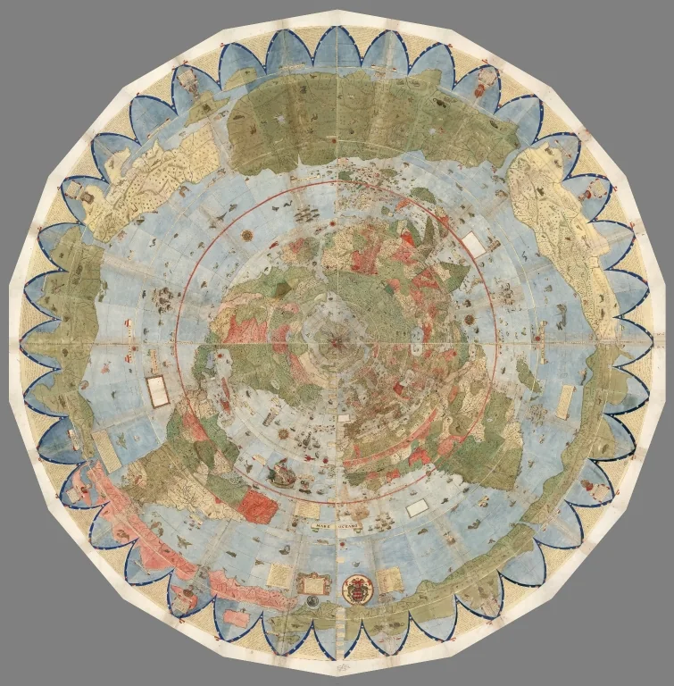

A collaborative research project at Mathematics Münster
Homotopical Cartography Project

Urbano Monte, Composite: Tavola 1–60, 1587. Digital composite by Brandon Rumsey, 2017. Polygonal paper outline preserved.
In this community project, we explore the landscape of mathematics through homotopical methods, using AI tools where they help. Our aim is to develop original mathematical insights, advance mathematical knowledge, and deepen human understanding, particularly in homotopy theory and neighbouring areas.
We present our findings in Exploration Charts: jointly authored mathematical writeups presenting results, examples, counterexamples, and proofs. Each Chart also records the approaches, limitations, difficulties, and open questions needed to understand and extend the work.
The Atlas
Together, the Charts form The Atlas: a growing collection of mathematical explorations, connected through common structures, methods, and questions.
Some Exploration Charts may develop into full papers and be posted on arXiv or Hexagon; others may remain standalone explorations. Each Chart clearly states its status, what has been checked and understood by its human authors, and what remains provisional or open.
What an Exploration Chart contains
What we explored
The starting point, motivation, and territory investigated.
What we learned
The resulting mathematical understanding is the core of the Chart: precise statements, examples, counterexamples, and complete proofs where appropriate.
What worked
The productive ideas, examples, methods, and uses of AI tools that moved the exploration forward.
Limitations and unsuccessful approaches
False analogies, blocked approaches, systematic AI errors, refuted conjectures, or routes that generated output without insight.
Difficulty landscape
What was hard to discover, produce, verify, or understand? Where was human orientation essential, and which parts were routine for the tools used?
Where this points next
New questions, promising regions, unresolved obstacles, and directions worth a separate exploration block.
Charts are developed in carefully chosen thematic blocks lasting one to three weeks, with two charting sessions each week and questions selected together to complement ongoing research.